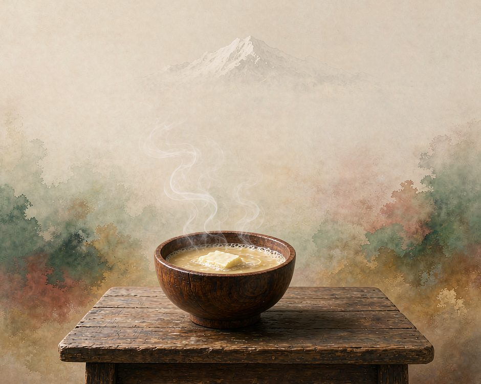
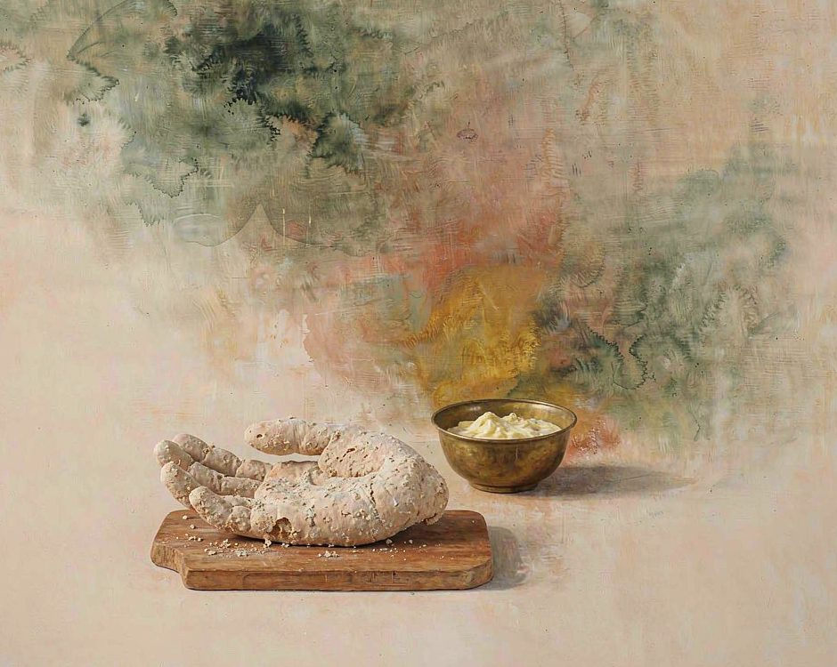
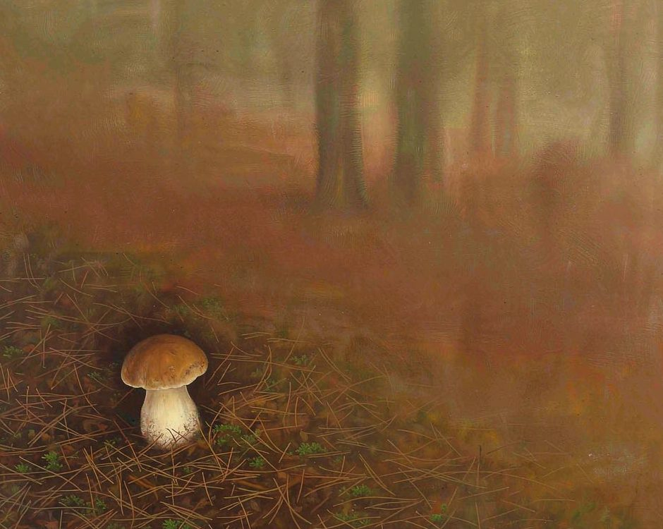

先說清楚，海拔三千公尺以上，水不到一百度就開了。
那天在香格里拉，早晨煮水，看著在冒氣，灌進壺裡卻是溫吞的。滾不起來。酥油茶要的就是這個溫度，滾開的會把奶花衝散。所以當地人煮茶不靠火大，靠等。同樣的水，在高原上要等得比平原更久。
早課的鐘聲從寺院那邊傳過來，混在炊煙裡。抬頭能看見山脊上的雪線，一天裡會往下挪一點。風從山口過來，涼得乾脆，落在臉上有實實在在的重量。這些都是高海拔給的，高原不裝樣子。
一碗酥油茶端上來，底下是三個不同的時間。

三個時間疊在一頓飯裡
酥油是昨天擠的犛牛奶。今天早上擠的奶熬成酥油，要等兩三個鐘點。奶在鍋裡慢慢分開，表面的黃油一層一層結起來，用竹片刮下來，團成一塊。這一步急不得，攪了就不是分層，是一鍋渾。
糌粑是去年秋天收的青稞。青稞要在霜前割下來，攤在曬場上脫粒、曬乾、舂碎、磨粉。磨出來的粉要細到能捏成團不散。這些活兒從秋天排到冬天，一家人整個秋冬都在跟青稞打交道。
茶是磚茶，從更遠的地方換來，壓成磚，撬下指甲蓋大小的一塊丟進壺裡，夠泡很多回。這一塊茶在路上走的時間，比在壺裡待的時間長得多。
昨天擠的奶，去年的麥，很久以前壓的磚。
三樣東西，三個時間，疊在同一碗裡。
吃它的時候沒法不想這三段時間各自走了多久。
藏麵也是同一個道理。揉麵用溫水，鍋裡水不滿滾，犛牛油的香氣要熬出來才掛得住。麵條撈出來要過一遍涼水，涼了才筋道。這碗麵從揉到吃，前後二十多分鐘，一個人吃不完一碗。剩下的麵會坨，坨了口感就垮，所以藏族人寧可少煮，也不剩。
青稞酒更慢。酒麴要在溫度剛好的時候拌進去，早了酸，晚了糟。釀出來的酒不上頭，喝完嘴不乾，可後勁要在半小時後才上來。有人喝完先去搬一趟柴火，回來才感覺到。
三樣東西擺在同一張桌上，構成了高原上的一天。
牛吃一整個夏天
犛牛在山上待一整個夏天。草長得慢的地方，它要不停地走，走一天換一片草場，走過的草場要留給來年。
所以犛牛不是圈在一塊地裡養的，它一直在移動。牧民跟著牛走，牛走到哪，人就在哪扎下來。
這樣一來，一碗酥油茶裡的奶，裡面有牛走過的路。牛一天走幾公里，那些草被它啃過，根還留著，第二年再長一遍。奶裡頭有這些草的東西。
藏區有句話。
牛走了，草場才活。
不圈牛的地方，草反而長得更好。這個道理在很多地方都通，只是平常不太有人講出來。
草場輪轉的速度，取決於一年有多少天能長草。海拔越高，生長季越短，輪轉就越慢。高原上的時間不是比喻，是真的短。犛牛有幾樣別的牛沒有的地方。毛厚，一層能頂零下二三十度，夜裡臥在雪裡不動。胃分成四瓣，能把粗草磨成糊狀，所以犛牛能吃別的牛不能吃的草。
蹄寬而軟，在碎石坡上不打滑。指甲能扣進土裡，站得住。這些本事都是被海拔一件一件逼出來的，不是長來好看的。
它也有代價。犛牛在低海拔活不長，牛在海拔三千以上才舒服，下來反而容易出問題。所以牧民跟著季節走，夏場上高，冬場下低，一年裡牛和人要換幾次地方。
換場的時候要拆帳篷、趕牛、找新水源，一整天都在路上。牛走在前面的，人跟在後面，隊伍拉得很長。走到晚上停下來，帳篷支起來就是家。這個生活裡沒有「找個地方定居」這個選項，草在哪裡長得好，就去哪裡。
糌粑是手捏的
糌粑沒有模具。
青稞粉倒進碗，加酥油，加一點水，手掌進去揉。揉到粉和油混成一體，能捏成團，就成了。
沒有模具，形狀就各不相同。捏出來是圓的還是扁的，取決於誰的手、用了多大力氣。同一鍋糌粑，一家人捏出來的都不一樣。吃的時候不用碗。左手託一塊，右手拇指在糌粑團上按一個窩，舀一勺酥油茶注進去，茶順著窩流下去，浸進粉裡，咬一口。
這個吃法有一個好處，慢。一口就是一口，沒法三口吃完。餓了可以吃很多口，可每一口都得停下來、捏住、等茶浸進去。
所以這頓飯吃不快，也不用快。
糌粑團在手裡會慢慢回溫。開始是涼的，捏著捏著就有了一點溫度。手心的熱傳過去，酥油在粉裡化開，味道會變深一層。同一團糌粑，捏到不同溫度是兩個味道。吃的人捏著它，就已經在參與這頓飯了。

誠實的部分
八月裡的某幾十天，山上會長出松茸。一年就那幾十天。
松茸出土要等雨。雨夠了的年份才長得多，雨少的年份幾乎絕收。有一年夏天的雨下得特別少，整個州的松茸幾乎收不上來，價格高得離譜，山民上山一整天也撿不到幾朵。
松茸貴，是因為它種不出來。它只能和松林裡的根菌共生，長在哪棵樹下、什麼時候冒出來，都不確定。採的人要在山裡走，眼睛要尖，看到一朵輕輕挖出來，周圍的土要壓實，不然下一年的菌絲會受傷。
現在松茸賣到城裡，價格被抬得很高。收購商在路口等著，村裡人一大早就去採。收入比種青稞好，年輕人就不用回來了。
松茸不是年年都有。雨水要剛好，不能多也不能少。多會長得太雜，少了乾脆不出。菌絲在地下要養很多年才夠粗，粗了才頂得出這一朵。有經驗的採菇人看地面就知道下面有沒有，挖開是白費的。沒人能保證今天進山有收穫。

這些照實說，是因為不想把它寫得比實際好看。
牧區的下一代在減少，犛牛群在縮小，能採的人越來越少。把這些說清楚，土地的樣子才不會被想當然。
想種回去，不必先到香格里拉
在城市裡怎麼等。
買一塊犛牛奶的酥油，捏一捏。酥油不黏手，化開會在表面留一層油花。買糌粑的時候問一句是石磨磨的還是機器磨的，石磨磨的粗一些，有麥香。
做一次熬油的動作。買牛奶，小火，慢慢等，不要攪。表面的黃油會自己結起來。等的時候不能走開，可這十分鐘裡，可以什麼都不做。城市裡很少有這種十分鐘，什麼都不做也算數。
或者種一盆東西。松茸種不了，有些東西能種。青稞在花盆裡長不高，可是能長。抽穗那天會看見穗子從葉子裡冒出來，樣子和小麥不一樣。
慢慢來。這句話在高原上不是安慰，是方法。
（小練習。今天做一頓飯，把其中一樣食材的來路問到底，它從哪裡來，中間經過誰的手，走了多少公里。）
你桌上那頓飯，最遠的一道菜來自哪裡。